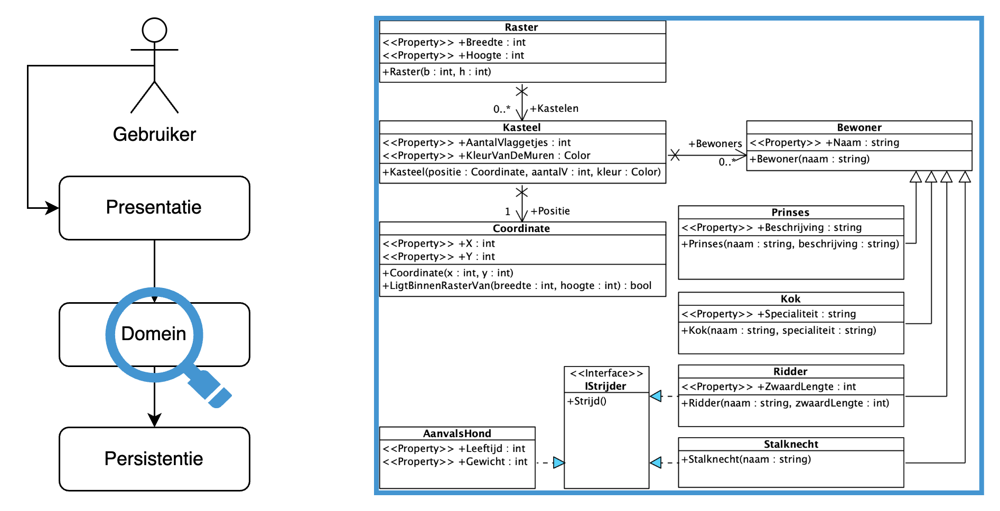
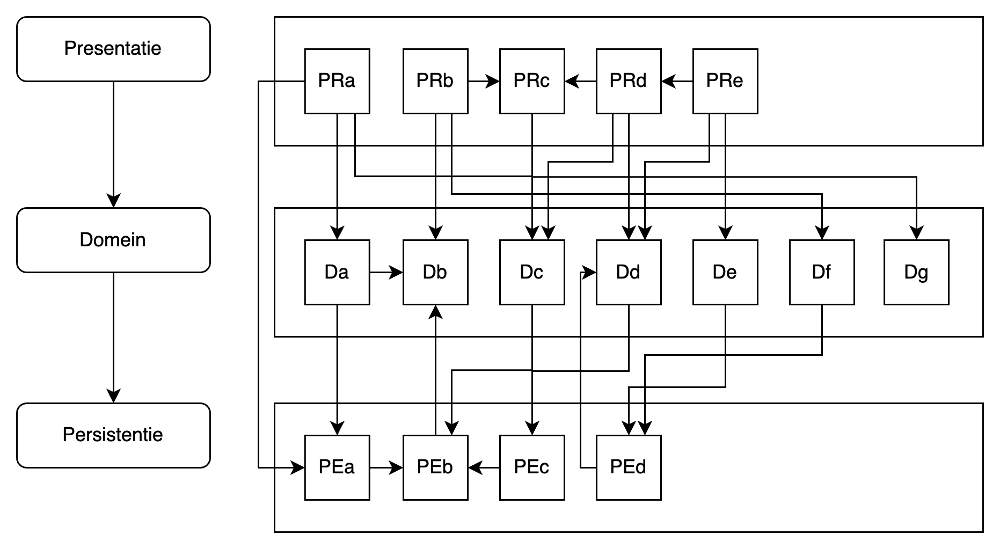
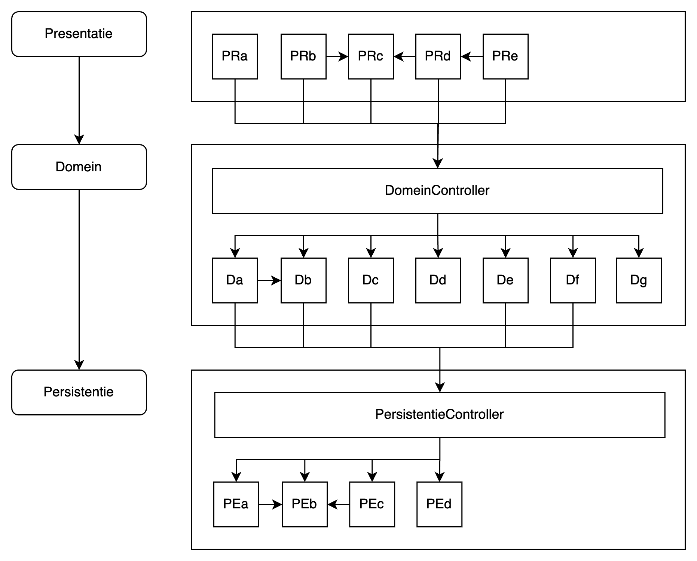
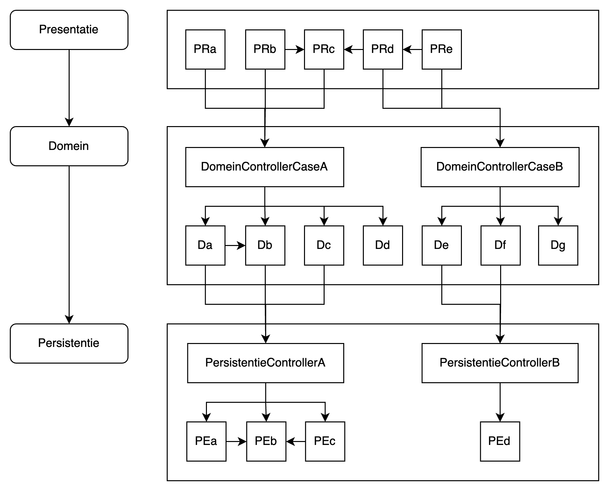
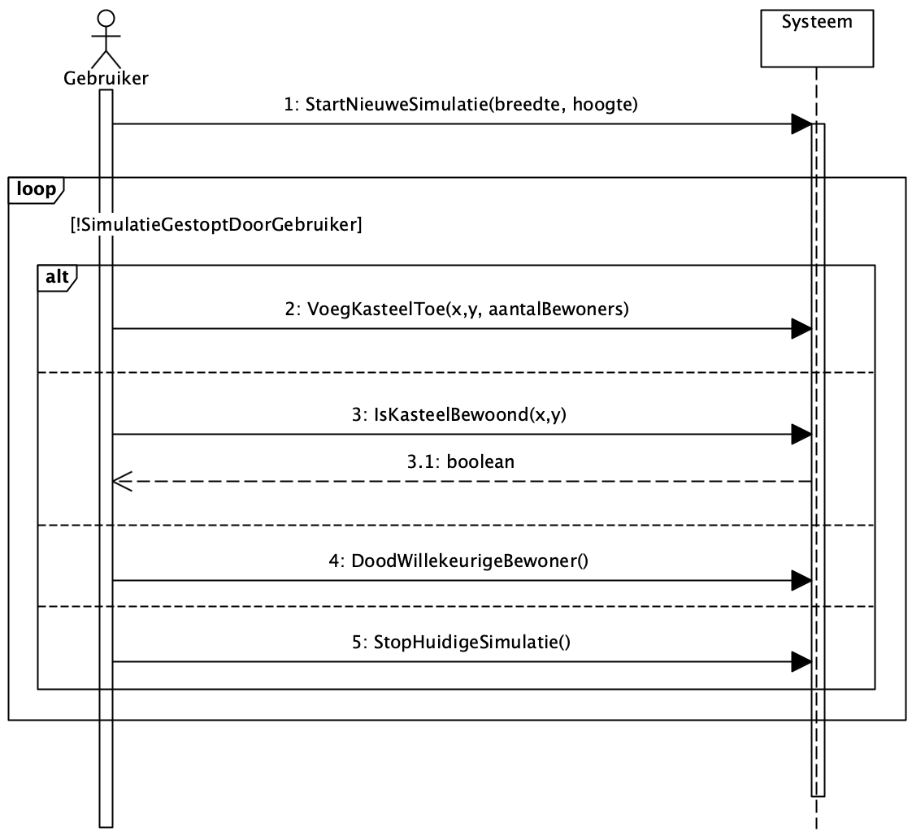
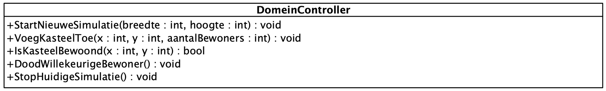
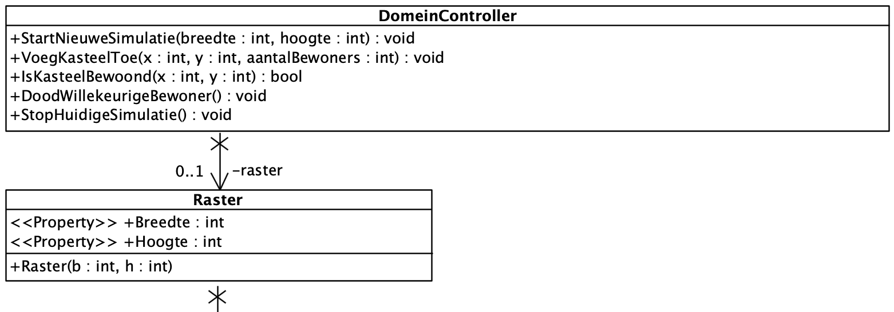
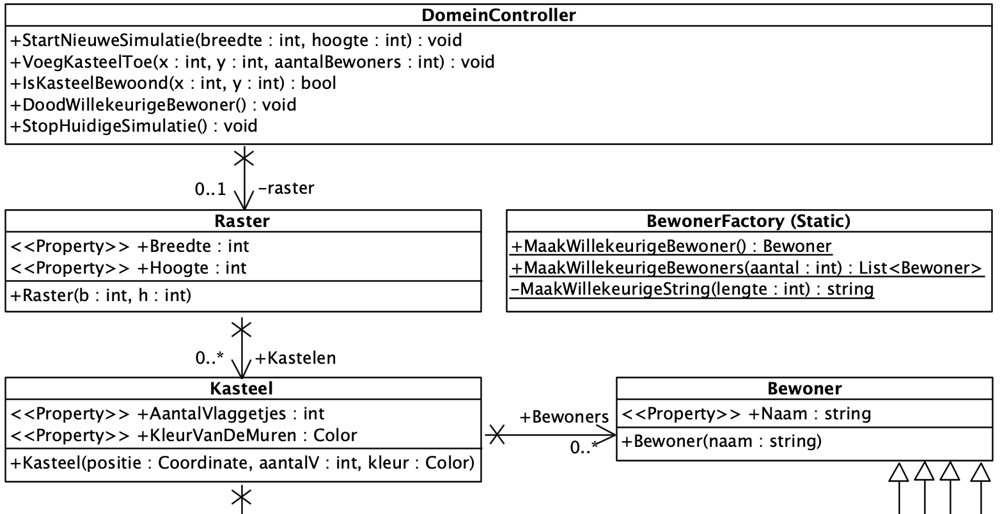
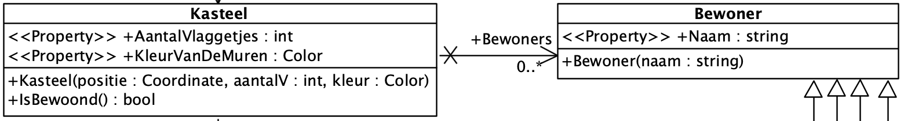
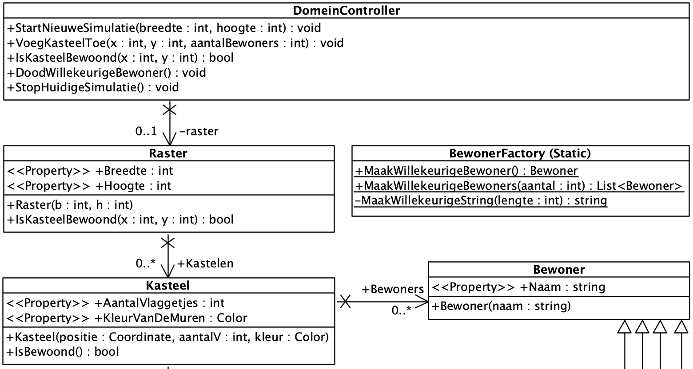

GRASP & SSD
| Deze les werd opgenomen op 26 februari 2025. |
In de eerste twee lessen hebben we uitgebreid aandacht besteed aan structuur, met een overzichtelijk DCD en leesbare code als resultaat. Ook het opdelen en plaatsen van logica in het ontwerp is van groot belang. Dat bekijken we deze les.
| Moderne software wordt gewoonlijk ontwikkeld aan de hand van een iteratief proces. In de praktijk zal men dus meermaals door de stappen analyse - ontwerp - implementatie - test lopen. Dit kan gebeuren voor kleine, grote, nieuwe of reeds bestaande functionaliteit. |
RDD
Wanneer we, door grondige analyse, een inzicht verworven hebben in wat de applicatie moet doen, proberen we dit op weloverwogen wijze te integreren in het softwareontwerp.
Naarmate we ervaring opdoen als developer in verschillende probleemdomeinen, wordt het steeds gemakkelijker om dit grotendeels intuïtief in te vullen. Spijtig genoeg kan intuïtie niet aangeleerd worden.
We kunnen wél een poging doen de gekoppelde denkpatronen te onderzoeken en neer te schrijven. Op deze manier hebben nieuwe developers een houvast bij het ontwerpen en zodoende het opbouwen van hun eigen intuïtie.
Wanneer je mensen efficiënt wil laten samenwerken in eender welke context (bedrijf, sport, videogame) spreek je duidelijke rollen en verantwoordelijkheden af. Indien deze intelligent bepaald zijn en vervolgens competent en volgens afspraak uitgevoerd worden, loopt alles vlot.
In Responsibility Driven Design (RDD) passen we deze visie toe op softwareontwerp.
-
Wat moet de applicatie allemaal doen?
-
Welke roles & responsibilities zien we in dat proces?
-
Aan welke klassen kunnen we deze toewijzen?
We gebruiken de kracht van een OO-taal om mooie, leesbare en vooral onderhoudbare oplossingen te voorzien. We willen dus geen verwarrende langdradige procedurele logica of spaghetticode in ons project.
GRASP
De essentie van logica integreren in een OO-ontwerp is dus het toekennen van de juiste verantwoordelijkheden aan klassen. Maar hoe doen we dat dan concreet? Het zou handig zijn moesten we beschikken over enkele richtlijnen.
GRASP is een Engels acroniem dat staat voor Generalized Responsibility Assignment Software Principles. Het bestaat uit negen richtlijnen die kunnen worden gebruikt om in objectgeoriënteerde systemen verantwoordelijkheden toe te kennen aan klassen of objecten.
| We zijn uiteraard niet de eerste mensen die ons dit afvragen. Het is prima om verder te bouwen op de ideeën van anderen. Mochten we dit niet doen, zouden we nog steeds met met scherpe stenen op mammoeten jagen. Verder (proberen) bouwen werkt natuurlijk enkel in ons voordeel wanneer we de ideeën ook effectief begrijpen! |
We kunnen deze negen richtlijnen onderverdelen in rollen (van klassen) en vuistregels voor het ontwerp.
Controller Rol
- Probleem
-
Welk is het eerste object, achter de User Interface, dat verantwoordelijk is voor het ontvangen en coördineren van een systeemoperatie?
- Oplossing
-
Ken de verantwoordelijkheid toe aan een klasse die het volledige systeem representeert, een Controller klasse
Information Expert Rol
- Probleem
-
Aan welke klasse kennen we een bepaalde verantwoordelijkheid toe?
- Oplossing
-
Ken de verantwoordelijkheid toe aan de klasse die de (meeste) informatie heeft om de verantwoordelijkheid te dragen.
Creator Rol
- Probleem
-
Wie is er verantwoordelijk voor de creatie van een instantie van klasse A?
- Oplossing
-
Geef de verantwoordelijkheid om een instantie van klasse A te maken aan die klasse B die aan het meeste van de volgende omschrijvingen voldoet:
-
B bevat A
-
B houdt de toestand van A bij
-
B gebruikt A veelvuldig
-
B heeft de data die benodigd is voor initialisatie van A
-
Vuistregels
- Low Coupling
-
Reduceer de impact van wijzigingen door verantwoordelijkheden dusdanig toe te kennen dat er alleen strikt noodzakelijke associaties bestaan.
- High Cohesion
-
Houd klassen begrijpelijk en onderhoudbaar door een grote samenhang te behouden tussen de verschillende verantwoordelijkheden van een klasse.
- Polymorphism
-
In het geval van type afhankelijk gedrag, ken dan de verantwoordelijkheid toe aan specifieke types/klassen, in plaats van conditionele logica (
if,switch) te gebruiken. - Pure Fabrication
-
Als Information Expert geen uitkomst biedt zonder schending van de Low Coupling en High Cohesion richtlijnen, maak dan een nieuwe klasse om de verantwoordelijkheid te dragen.
- Indirection
-
Ontkoppel klassen door verantwoordelijkheden toe te kennen aan een tussenliggende klasse die de interactie tussen de klassen overneemt.
- Protected Variations
-
Definieer een interface voor gedrag waarin veel variatie verwacht wordt zodat de interface gelijk blijft, en de implementatie eigen is aan het type.
Drielagenmodel Introductie
Software wordt vaak opgedeeld in lagen. Elk van deze lagen heeft een afgelijnde verantwoordelijkheid. De klassen binnen een laag vervullen op hun beurt een deel van de verantwoordelijkheid van de laag. Een klassiek voorbeeld van dit paradigma is het drielagenmodel.
| Het drielagenmodel wordt uitgebreid behandeld in Programmeren Gevorderd 1. Ook in dit vak komen we er op terug. Op dit moment heb je een hoog-over begrip van de context nodig, maar de focus blijft tijdens deze les op de domeinlaag. |

-
In de presentatielaag vinden we klassen die instaan voor het weergeven - presenteren - van informatie aan de gebruiken. Denk aan vensters, lijstjes, veldjes en knopjes.
-
In de domeinlaag bevinden zich de klassen die centraal staan in het modelleren van structuur en gedrag van de oplossing. Denk aan het
KasteelDCD - Domain Class Diagram. -
In de persistentielaag vinden we klassen die instaan voor het duurzaam bewaren - persisteren - van informatie. Hier zal vaak verbinding gelegd worden met een databank.
Het opdelen van software in lagen met eigen verantwoordelijkheden verhoogt de leesbaarheid en de onderhoudbaarheid van de code.
Technisch gezien zou eender welke klasse uit eender welke laag een associatie kunnen hebben met eender welke klasse uit eender welke laag. We nemen ons voor dit niet te doen, want het wordt al snel een spinnenweb. Waarom? Observeer.

Dit helpt ons niet verder. Of er nu lagen zijn of niet, wanneer alles alle kanten opgaat, is er geen toegevoegde waarde. We moeten de communicatie tussen de lagen onder controle krijgen.
-
We geven in elke laag een klasse de verantwoordelijkheid aanspreekpunt te zijn van de laag. Een klasse die deze rol vervult, noemen we een Controller klasse.
-
We laten communicatie tussen lagen maar in één richting toe. De Presentatie mag het Domein aanroepen en het Domein mag de Persistentie aanroepen.

Dit ziet er al een pak minder stresserend uit 😌
In bovenstaand voorbeeld hebben het domein en de persistentie elke één grote controller, een façadecontroller. Vaak zullen we ondervinden dat de logica van de applicatie opgedeeld kan worden in use cases, flows of functionaliteiten. Wanneer blijkt dat niet elke domeinklasse bij elke use case betrokken is, kunnen we casecontrollers maken die slechts een subset van het domein aanspreken. Hetzelfde geldt voor de persistentiecontroller.

Het herkennen, of zelfs introduceren van klassen die de rol van information expert en creator kunnen dragen, zal de directe afhankelijkheden tussen de controller en de domeinklassen nog kunnen terugdringen.
| In de praktijk zullen we de persistentie vaak iets anders gaan indelen en benoemen, maar conceptueel zit het hier goed. Je leert er meer over in Programmeren Gevorderd 1 en 2. |
SSD
We voelen dat het tijd wordt om een beetje functionaliteit toe te voegen aan het Raster-Kasteel-verhaal. We roepen een scenario in het leven waarbij
-
de gebruiker een nieuwe simulatie kan starten voor een raster van breedte x en hoogte y.
-
de gebruiker een kasteel kan toevoegen op een gegeven postie x, y met aantal bewoners a.
-
Het systeem zal willekeurige bewoners genereren.
-
-
de gebruiker een willekeurige bewoner kan laten doden.
-
de gebruiker kan vragen of een kasteel op positie x,y bewoond is.
-
de simulatie eindigt wanneer de gebruiker dit aangeeft.
Een Systeem Sequentie Diagram (SSD) toont interactie tussen de gebruiker en het systeem.

GRASP Toepassen
DomeinController
We hebben nog geen domeincontroller in het ontwerp. We zullen deze moeten toevoegen. Elke vraag komende van buiten ons domein zal daarlangs moeten passeren. Ook mag de domeincontroller geen instanties van domeinklassen teruggeven naar de buitenwereld.
Het SSD geeft ons inzicht in de mogelijkheden die de DomeinController moet bieden.

Het starten van een simulatie impliceert het aanmaken van een nieuw Raster. De DomeinController is dus ook Creator van het Raster. De DomeinController zal een instantie van deze klasse als eigenschap nodig hebben. Dit mag niet gedeeld worden met de buitenwereld, dus het is private.

We schrijven een eerste versie van de DomeinController.
public class DomeinController
{
private Raster? _raster = null;
public void StartNieuweSimulatie(int breedte, int hoogte)
{
_raster = new Raster(breedte, hoogte);
}
public void StopHuidigeSimulatie()
{
_raster = null;
}
public void VoegKasteelToe(int x, int y, int aantalBewoners)
{
throw new NotImplementedException();
}
public bool IsKasteelBewoond(int x, int y)
{
throw new NotImplementedException();
}
public void DoodWillekeurigeBewoner()
{
throw new NotImplementedException();
}
}Het starten en stoppen van een simulatie heeft een eerder vanzelfsprekende implementatie. We kennen de verantwoordelijkheid toe aan de controller zelf en hoeven niet verder in het DCD te duiken. De andere methoden vereisen meer denkwerk.
Kasteel Constructor
public Kasteel(Coordinate positie, int aantalV, Color kleur)De constructor vereist drie parameters. Twee ervan kennen we niet. We zouden waarden kunnen hardcoden in de logica die de constructor zal aanroepen.
public void VoegKasteelToe(int x, int y, int aantalBewoners)
{
var kasteel = new Kasteel(new Coordinate(x, y), 3, Color.Aqua);
}Dit werkt, maar het kan beter. Als we geen info krijgen van de buitenwereld, wie zou er dan verantwoordelijk moeten zijn voor de standaardwaarden van deze klasse? De klasse Kasteel zelf is een betere kandidaat.
public class Kasteel {
//...
public Kasteel(Coordinate positie)
: this(positie, 3, Color.Aqua) { (1)
}
public Kasteel(Coordinate positie, int aantalV, Color kleur) {
Positie = positie;
AantalVlaggetjes = aantalV;
KleurVanDeMuren = kleur;
Bewoners = new();
}
}| 1 | De nieuwe constructor geeft de ontvangen positie door, alsook standaardwaarden voor aantalV en kleur. |
De controller kan hier nu gebruik van maken.
public void VoegKasteelToe(int x, int y, int aantalBewoners)
{
var kasteel = new Kasteel(new Coordinate(x, y));
_raster.Kastelen.Add(kasteel);
}Dat ziet er al beter uit. Nu moeten we er ook nog voor zorgen dat het gevraagde aantal willekeurige bewoners toegevoegd worden.
BewonerFactory
We kunnen deze logica rechtstreeks in de controller schrijven, maar dat voelt niet als de juiste plaats van deze verantwoordelijkheid. Het Raster heeft ook geen directe kennis van bewoners. Het Kasteel wel, maar we hebben de moeite genomen de types bewoners te abstraheren voor Kasteel.
Wanneer we binnen het bestaande domeinmodel geen gepaste plaats vinden voor dergelijke creatielogica, kunnen we ervoor opteren een nieuwe klasse in het leven te roepen die deze verantwoordelijkheid zal dragen. Zo een klasse heet een Factory. We maken de factory static zodat de controller, of andere klassen, er geen expliciete instantie van nodig hebben om de functionaliteit te gebruiken. We voegen de methoden toe die ons handig lijken in deze context.

We kunnen ons afvragen of we hier niet aan overdesignen zijn. Een volledig nieuwe klasse om wat objecten te genereren? Wel, laat ons de code eens bekijken.
| Afhankelijk van je C# kennis, kan de logica binnen de BewonerFactory een beetje cryptisch lijken. Maak je hier op dit moment geen zorgen over en accepteer dat methoden doen wat ze beloven. |
public static class BewonerFactory
{
public static Bewoner MaakWillekeurigeBewoner()
{
var naam = MaakWillekeurigeString(10);
var r = new Random();
return r.Next(4) switch
{
0 => new Prinses(naam, MaakWillekeurigeString(50)),
1 => new Ridder(v, 1),
2 => new Stalknecht(naam),
3 => new Kok(naam, MaakWillekeurigeString(30)),
_ => throw new Exception()
};
}
public static List<Bewoner> MaakWillekeurigeBewoners(int aantal)
{
return Enumerable.Repeat(0, aantal)
.Select(x => MaakWillekeurigeBewoner())
.ToList();
}
private static string MaakWillekeurigeString(int lengte = 10)
{
return string.Join("", Enumerable.Repeat(0, lengte)
.Select(n => (char)new Random().Next(32,127)));
}
}We kunnen de functionaliteit onmiddellijk integreren in de controller.
public void VoegKasteelToe(int x, int y, int aantalBewoners)
{
var kasteel = new Kasteel(new Coordinate(x, y));
var bewoners = BewonerFactory.MaakWillekeurigeBewoners(aantalBewoners);
kasteel.Bewoners.AddRange(bewoners);
_raster.Kastelen.Add(kasteel);
}We concluderen dat het zeker de moeite waard was een nieuwe klasse in het leven te roepen. De bestaande domeinklassen, inclusief domeincontroller, houden we zo licht en leesbaar.
IsBewoond
De domeincontroller voorziet een methode om te controleren of een kasteel bewoond is.
public bool IsKasteelBewoond(int x, int y)
{
throw new NotImplementedException();
}In dit geval moet er niets gemaakt worden, we zoeken dus geen creator. We zijn op zoek naar een klasse die het beste geschikt om op de vraag te antwoorden: de (information) expert. Het Kasteel lijkt de geschikte kandidaat, want die heeft een lijst van bewoners.

public class Kasteel {
//...
public List<Bewoner> Bewoners {get; set;}
//...
public bool IsBewoond()
{
return Bewoners.Any();
}
}De domeincontroller heeft geen expliciete kennis van de kastelen op het raster. We willen de associaties beperken tot het strikt noodzakelijke. De informatie zal dus door het raster naar boven moeten kunnen bubbelen.

We implementeren de methode in Raster.
public class Raster {
//...
public List<Kasteel> Kastelen { get; private set;}
//...
public bool IsKasteelBewoond(int x, int y)
{
return Kastelen.Single(kasteel =>
kasteel.Positie.X == x && kasteel.Positie.Y == y)
.IsBewoond();
}
}We roepen de methode aan in de controller.
public bool IsKasteelBewoond(int x, int y)
{
return _raster.IsKasteelBewoond(x, y);
}Resultaat
DomeinController
Dit resulteert uiteindelijk in onderstaande controller. Deze controller vervult zijn rol als facade van het domein, maar bevat quasi geen logica door gebruik van expert en creator insteek.
public class DomeinController
{
private Raster? _raster = null;
public void StartNieuweSimulatie(int breedte, int hoogte)
{
_raster = new Raster(breedte, hoogte);
}
public void StopHuidigeSimulatie()
{
_raster = null;
}
public void VoegKasteelToe(int x, int y, int aantalBewoners) (1)
{
var kasteel = new Kasteel(new Coordinate(x, y));
var bewoners = BewonerFactory.MaakWillekeurigeBewoners(aantalBewoners);
kasteel.Bewoners.AddRange(bewoners);
_raster.Kastelen.Add(kasteel);
}
public bool IsKasteelBewoond(int x, int y)
{
return _raster.IsKasteelBewoond(x, y);
}
public void DoodWillekeurigeBewoner()
{
throw new NotImplementedException(); (2)
}
}| 1 | Deze methode bevat nog net iets meer logica dan we zouden willen. Zie oefening. |
| 2 | Nog niet geïmplementeerd. Zie oefening. |
Oefening
Must
-
Vertrek van je code voor het domeinmodel van de oefening uit de vorige les.
-
Implementeer de aanpassingen uit deze les.
-
Ontwerp en implementeer de ontbrekende methode
DoodWillekeurigeBewoner().
Should
-
Ontwerp en implementeer een elegantere oplossing voor
VoegKasteelToe().-
Als het goed zit, wordt ook dit een oneliner.
-
Could
-
De huidige implementatie zal exceptions gooien of onverwacht gedrag vertonen wanneer afgeweken wordt van de happy flow. Probeer enkel probleempunten te identificeren en maakt de code robuuster.
-
Wat zou de originele bedoeling van
Coordinate.LigtBinnenRasterVan()geweest zijn? Heb je een dergelijke methode nodig en, zoja, staat ze dan op de juiste plaats? Welke aanpassingen zou je aan het ontwerp maken?